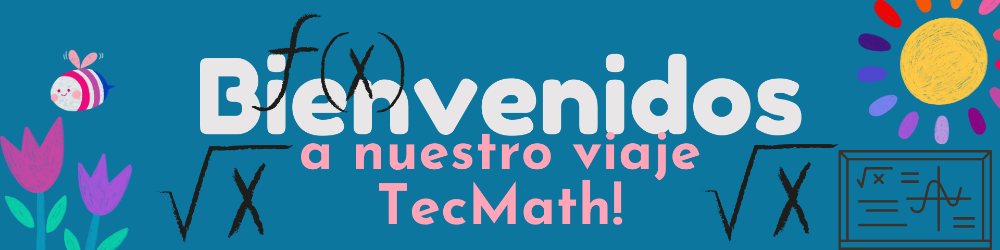

TecMath
Introducción a la Raíz Cuadrada

Introducción
¡Bienvenido al curso de La Raíz Cuadrada! Aquí aprenderás los conceptos básicos y aplicaciones prácticas de la raíz cuadrada.
Objetivo TecMath
Comprender la raíz cuadrada y aplicarla en problemas matemáticos del nivel de octavo grado.
Importancia
La raíz cuadrada es una herramienta esencial en matemáticas que facilita la resolución de problemas en geometría y otras áreas.
Conceptos

Conceptos Básicos
¿Qué es la raíz cuadrada?
La raíz cuadrada de un número es otro número que, multiplicado por sí mismo, da como resultado el número original. Por ejemplo, la raíz cuadrada de 9 es 3, porque 3 x 3 = 9.
Propiedades de la raíz cuadrada
- La raíz cuadrada de un número positivo es siempre positiva.
- La raíz cuadrada de cero es cero.
- No existe raíz cuadrada real para números negativos (sin incluir números complejos).